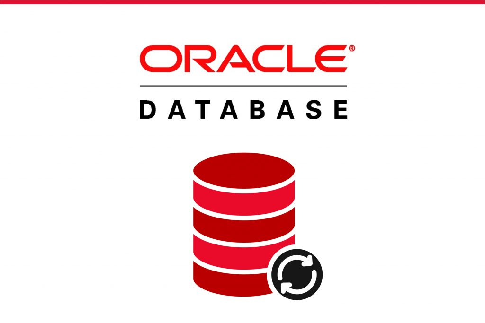
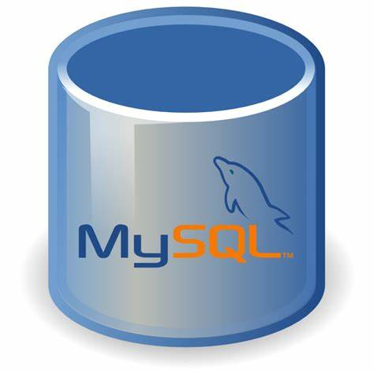
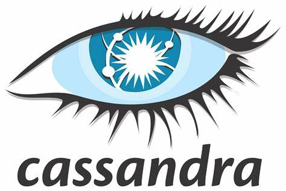
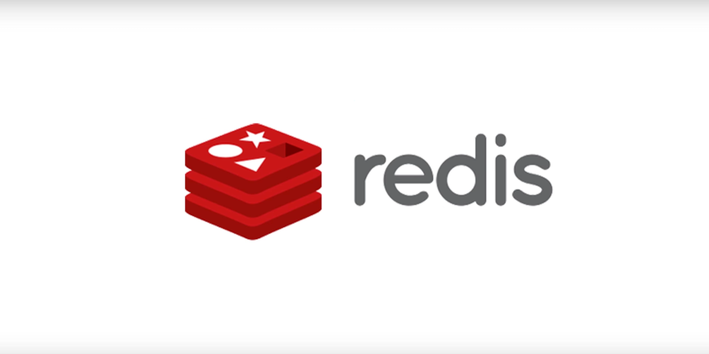

What is Database Platforms?
A Database platform is a software system that allows users to store, manage, and retrieve data in a structured and organized manner. It typically includes a set of tools and services
for creating, modifying, and querying databases, as well as managing access to data and ensuring its security and integrity.
Database platforms can be classified into two main categories: relational and non-relational (also known as NoSQL) databases. Relational databases use a schema to organize data into tables
with rows and columns, and they enforce strict rules to maintain consistency and integrity. Non-relational databases, on the other hand, are more flexible and scalable, and they use various data models, such as document-based
or key-value stores, to store and retrieve data.
Here's an example of a database platform with its meaning:
- Oracle Database: Oracle Database is a relational
database management system (RDBMS) developed by Oracle Corporation. It is a popular and widely used database platform that supports SQL (Structured Query Language) for querying and manipulating data. It provides
various features, such as data compression, partitioning, encryption, and replication, to manage and scale large databases. Oracle Database also supports a wide range of programming languages and development tools
for building applications that interact with the database.
- MySQL: MySQL is an open-source relational database
management system developed by Oracle Corporation. It is widely used in web applications and supports SQL for managing and querying data. MySQL is known for its scalability, performance, and ease of use, and it
is used by many popular websites and applications.
 MongoDB: MongoDB is a NoSQL document-oriented database
management system that stores data in JSON-like documents. It provides high performance, scalability, and flexibility, and it is popular for its ease of use and support for dynamic and unstructured data.
MongoDB: MongoDB is a NoSQL document-oriented database
management system that stores data in JSON-like documents. It provides high performance, scalability, and flexibility, and it is popular for its ease of use and support for dynamic and unstructured data.
 Microsoft SQL Server: Microsoft SQL Server is a relational database management
system developed by Microsoft Corporation. It supports SQL and provides various features, such as data warehousing, business intelligence, and data analysis. It is widely used in enterprise applications and provides
high performance and scalability.
Microsoft SQL Server: Microsoft SQL Server is a relational database management
system developed by Microsoft Corporation. It supports SQL and provides various features, such as data warehousing, business intelligence, and data analysis. It is widely used in enterprise applications and provides
high performance and scalability. - Cassandra: Apache Cassandra is a distributed
NoSQL database management system that provides high scalability and fault tolerance. It is used for managing large amounts of data across multiple servers and data centers and is popular for its ability to handle
high-volume, high-velocity data.
- Redis: Redis is an in-memory data structure store
that supports various data structures, such as strings, hashes, lists, and sets. It provides high performance and scalability and is popular for its ability to handle real-time applications and cache data.
These are just a few examples of the many database platforms available today, each with its own strengths, features, and use cases.
About
- If you want to learn more, you can search for it in your browser.
- The content of this site is not mine to take credit. I only get information on the internet.
- Click to Watch my Video